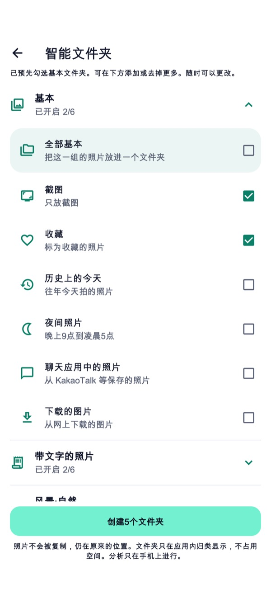
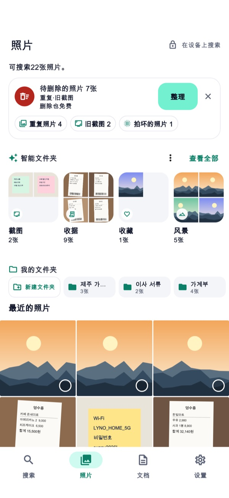

新功能
1. 整组变成一个文件夹 · 组合文件夹
在"选择文件夹"中展开分组,开启最上面一行(如"全部爱好·运动")。该组所有文件夹的照片会放进一个文件夹,同一张照片只出现一次。

2. 按文件夹名称搜索
输入已开启的智能文件夹名称,该文件夹的照片也会显示在结果下方。用空格分开输入两三个,只显示同时属于这些文件夹的照片。
示例: 狗 海滩 日落
3. 38 个智能文件夹
在照片 → 开启智能文件夹(或选择文件夹)中开启。本次新增:晚霞, 夜景, 登山, 钓鱼, 潜水·水下, 攀岩, 摩托车, 乐器·演奏, 水族馆, 海鲜, 烤肉, 生日, 咖啡·杯子, 书, 包, 鞋, 风景

4. 从锁定屏幕直接搜索 · 锁定屏幕小组件
iPhone · Siri长按锁定屏幕,点"自定",再点时钟下方的位置并选择 LYNO Find。有搜索圆形、横向搜索框和语音搜索圆形。点日期可在日期旁放一行。点一下即可搜索,语音圆形会立即开始聆听。
5. 一秒查找 · 快捷方式
iPhone · Siri长按应用图标会出现“搜索”和“语音搜索”。也可以对Siri说“在LYNO Find中搜索”，Siri问要找什么时回答即可。
Android长按应用图标会出现“搜索”和“语音搜索”。从屏幕顶部下滑，编辑快捷设置（铅笔图标）并添加“LYNO Find 搜索”，随时一键打开。
6. 在主屏幕直接查找 · 小组件
iPhone · Siri长按主屏幕空白处，点左上角的编辑 → 添加小组件，选择 LYNO Find，有小号和横向两种。点小组件即可搜索，点麦克风即可语音搜索。也可以放在锁定屏幕上。
Android长按主屏幕空白处，在小组件中放置 LYNO Find，横向拉宽即为宽版。点小组件即可搜索，点麦克风即可语音搜索。